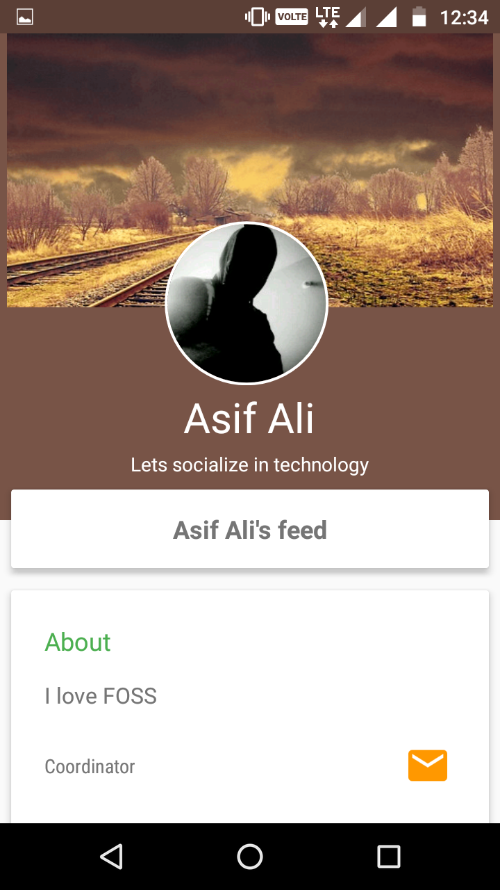

FOCUS
Free Open sourCe UserS
version - 1.1
Objective
Aim is to keep the users updated with new Open Source technologies and sessions being conducted by various GLUGs under FSMK
Introduction
- Android Application name FOCUS
- Open Source Technologies
- Sessions and workshops
- Native App
- Backend - simple yet powerful
- No Login
Description
- Trending Feed
- Session Feed
- User Interaction
- User Profile
- Social/Custom Login
- Add Posts/Sesssions
Trending Feed
Consists of the latest posts on various yet latest technologies
Session Feed
Consists of the upcoming sessions and workshops that are going to be conducted in and around
User Interaction
- Trending Feed
- Like/Dislike
- Discuss
- Report
- Share
- Session Feed
- Discuss
- Share
User Profile
- Name
- Status
- Description
- Interests
- Designation
- Profile Picture
Social/Custom Login
The application supports login from a Google or Facebook account. It also provides an option for custom login
Add Posts/Sesssions
Posts - a user can add a post in the form of web link, or a photo with title-description-link or without link, or only text data
Sessions - only an authorized user can add a session
Extra perks
Whole app can be used without internet
Application of Project
- The project mainly targets all tech enthsiasts as well as college students on various technologies
- Envisioned as a platform for people who promote open source technologies
- Better insight into upcoming open source technologies, and various oppurtunities to participate and learn such technologies
Implementation
Scenarios
- User not logged in - Basic functionality
- User in logged in - FLOWCHART
{kind=link}
Trending Feed
Session Feed
Profile
Event

Login
Registeration
Results
The application has been successfully published on playstore with a pre-launch conducted at SVCE on 27 Oct 16